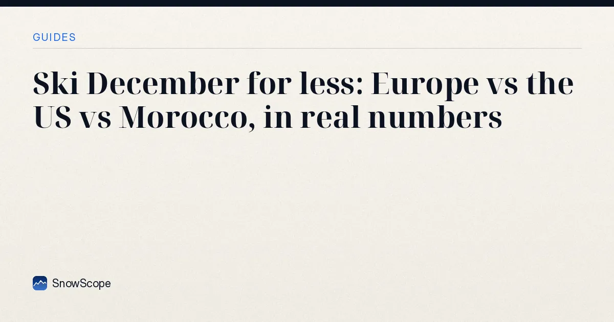

Ski December for less: Europe vs the US vs Morocco, in real numbers
Where does a December ski day cost the least for the snow you get? We put the same snow numbers, from our history of 46 winters, next to the ticket prices we could check on official pages, for the US West, the Alps and Morocco's High Atlas. The short answer: the cheapest ticket is in Colorado, the surest snow is high in the Alps and in the US Northwest, and Morocco is a gamble in December.
See the live snow forecast for World in the SnowScope appSnow depth, powder alerts and the 3D map, free.
The US West: cheap weekdays, strong odds up north
Ski Cooper in Colorado is the cheapest day we checked anywhere: $49 on weekdays ($99 on weekends and holidays), with 26 in (66 cm) at mid-mountain on a typical 15 December and 70 % of winters above 20 in (50 cm). Wolf Creek costs $96 on regular days for 34 in (87 cm) and 72 %.
For certainty, the Northwest and the Tetons lead. Mt. Baker had 46 in (116 cm) at mid-mountain on a typical 15 December and 93 % of winters above 20 in, at $98.80 off-peak. Grand Targhee had 46 in (118 cm) and 100 % of winters, at $125 to $180 depending on the date.

The Alps: high resorts, early-season prices
In the Alps the snow is high up. At Val Thorens, mid-mountain (2,498 m) had 89 cm on a typical 15 December, with 50 cm or more in 80 % of winters, and the top 159 cm. The Les 3 Vallées adult day pass is €75.70 in the low season from 5 to 18 December 2026 and €84.20 from 19 December.
Chamonix's Grands Montets had 65 cm at mid-mountain (2,001 m) on a typical 15 December and 63 % of winters above 50 cm, but 157 cm at the top. The Mont-Blanc Unlimited day pass costs from €75 to €104 between 28 November and 18 December, depending on the date. St. Anton, as a snow-only comparison, had 56 cm at mid-mountain and 61 %.
Morocco: the cheapest trip, the thinnest snow
Oukaïmeden, in the High Atlas south of Marrakech, is the obvious low-cost idea for European and Moroccan skiers. But on our history December is early there: mid-mountain (2,929 m) had 16 cm on a typical 15 December, and only 11 % of winters reached 50 cm. Its ski area spans 2,600 m to 3,200 m with six lifts (Wikipedia).
We could not find an official online lift tariff on 13 November 2026, so we do not quote a price: lifts are paid on site. Oukaïmeden is a fine December day trip if a storm has just passed, not a December ski holiday to book months ahead.
And Canada, for the record
Across the border from Idaho, Whitewater in British Columbia had 81 cm at mid-mountain (1,725 m) on a typical 15 December, with 50 cm or more in 89 % of winters, in the same league as Mt. Baker. We did not compare its price.
So where is December cheapest?
For the lowest price per day: a weekday at Ski Cooper. For the best snow per euro or dollar early in the month: an off-peak weekday at Mt. Baker, or the Les 3 Vallées low-season pass before 19 December at Val Thorens, where the snow is high and reliable. For a cheap trip with a small chance of skiing: Oukaïmeden, booked at the last minute after snow.
Tips for skiers
- Compare the snow first, then the ticket: a cheap day on thin snow is not cheap.
- In the Alps, ski before 19 December for the low-season price; in the US, ski Monday to Thursday.
- For Oukaïmeden, watch our snow map and go within days of a storm.
- Prices are in local currency as checked on the official pages; we do not convert them.
References and credits
- Mt. Baker Ski Area, daily lift tickets (official) www.mtbaker.us/tickets-and-passes/daily-lift-tickets/
- Ski Cooper, day pass 2026-27 (official) www.skicooper.com/cooper-day-pass/
- Wolf Creek Ski Area, tickets and passes 2026-2027 (official) wolfcreekski.com/tickets-passes/
- Grand Targhee, winter lift tickets 2026-27 (official) www.grandtarghee.com/tickets-passes/lift-tickets/winter-lift-tickets
- Les 3 Vallées, adult 1-day pass 2026-27 (official) www.les3vallees.com/en/skipass/adult-1-day-solo-pass
- Mont-Blanc Unlimited, ticketing 2026-27 (official) www.montblancnaturalresort.com/en/ticketing/montblanc-unlimited
- Wikipedia, Oukaïmeden (read 13 November 2026) en.wikipedia.org/wiki/Ouka%C3%AFmeden
About these numbers
Snow numbers: SnowScope snow history, 46 past winters (1980-81 to 2025-26) at the base, mid-mountain and top heights given, a reconstruction of past snow for an area corrected for height (ERA5-Land based; Snow_Hydro 1 km for Morocco), not the ski area's own snow reports. Current snow: the SnowScope snow map. Lifts, runs and heights: OpenSkiMap mapping. Prices: the official pages listed below, read on 13 November 2026; dynamic prices change with the date and with demand.
Cite this report
For research, teaching or the press: the numbers and charts are free to reuse under CC BY 4.0 with this citation.
SnowScope (2026), Ski December for less: Europe vs the US vs Morocco, in real numbers, https://snowscope.app/blog/en/2026/11/ski-december-for-less-europe-vs-us-vs-morocco.html, accessed 2026-11-14
SnowScope (Atlas Labs). (2026, November 14). Ski December for less: Europe vs the US vs Morocco, in real numbers. SnowScope snow reports. https://snowscope.app/blog/en/2026/11/ski-december-for-less-europe-vs-us-vs-morocco.html
BibTeX
@misc{snowscope2026skidecemberforlesseurope,
author = {{SnowScope (Atlas Labs)}},
title = {Ski December for less: Europe vs the US vs Morocco, in real numbers},
year = {2026},
month = nov,
howpublished = {\url{https://snowscope.app/blog/en/2026/11/ski-december-for-less-europe-vs-us-vs-morocco.html}},
note = {Published 2026-11-14 13:29 UTC; accessed 2026-11-14}
}· CC BY 4.0 · Methods, data and tools →
Follow World
Free: a message when fresh snow is coming, and the forecast every morning.
More snow reports

Mt Baker leads the US West with 19 in (47 cm) of upper snow, expecting 13 in (33 cm) through November 9. Model forecast from November 6.

Mt Baker: 8 in (21 cm) at the summit versus less than 1 in (2 cm) at the base. November forecast shows how this height gap will shift.

Les Grands Montets saw 74 cm of new snow in the last 72 hours, with more forecast for the coming days, according to our model on November 17, 2026.